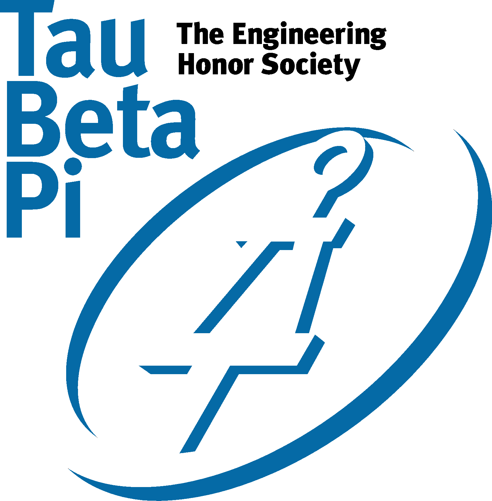
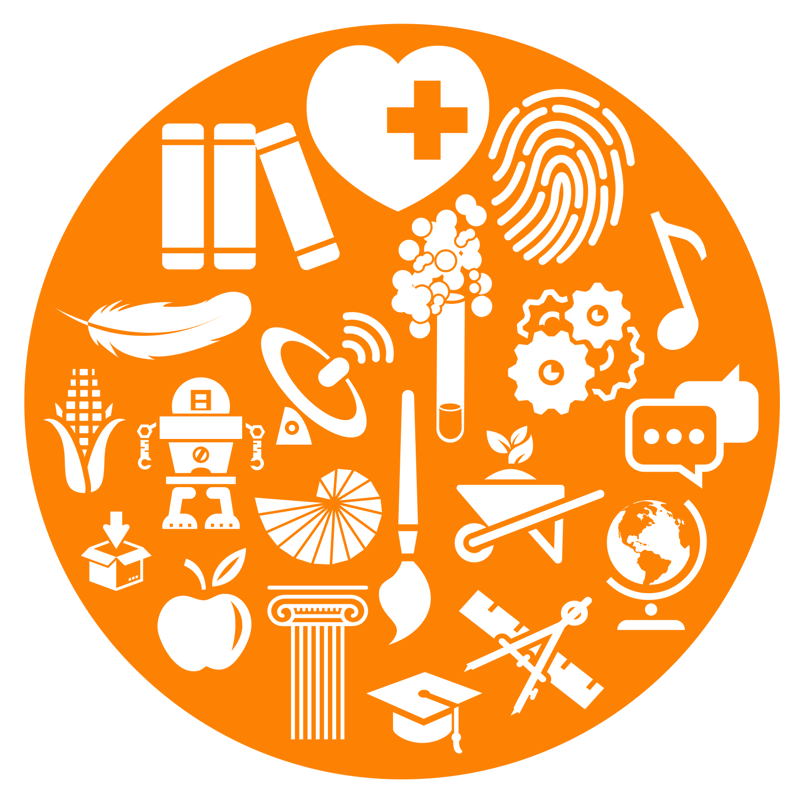

-

University of Tennessee at Knoxville
Graduated with chancellor's honors and engineering honors. Majored in computer science. Double Minored in cybersecurity and business administration. Concentrated on artificial intelligence.
12.14.2018
-

Tau Beta Pi
I was truly honored to be initiated into the engineering honors society, Tau Beta Pi - Tennessee Alpha. They were my target honors society. Thankfully, I was able to be a member of the second class of computer scientists ever initiated by Tennessee Alpha.
11.15.2018
-

Nonlinear Biodynamics Lab
Here I had the privilege of doing research on numerous brain computer interfaces. This was a multicultural environment which provided a learning experience that touched mechanical engineering, electrical engineering, computer science, neuroscience, psychology, and public speaking.
8.20.2017
-
Cross-Platform Mentor Application
I worked with the Engineering Mentor program and Society of Women Engineers to develope a cross-platform application designed to increase engineering retention rate. This was done using the React Native javascript framework, Amazon Web Services with Amplify.js, and Google's Material.io.
12.12.2018
-
Honors Capstone Theis
I wrote the my capstone thesis for Chancellor's honors program on the user interface and user experience design. The thesis also discusses creating proper development and testing environments and using professional practices such as source control, versioning, and productivity tracking.
12.12.2018
-

Eurēca 2018 Poster
Eurēca is UTK's Exhibition of Undergraduate Research and Creative Achievement. I presented the work done by my partner Jinxiao Yu and I under the guidance of Mr. Soheil Borhani and Dr. Xiaoping Zhao. The research involved creating a virtual reality testbed and GUIS to test control interfaces and classification algorithms. Experiments were done on comdining two paradigms, SSVEP and IBK, and fusing the classifiers.
4.18.2018